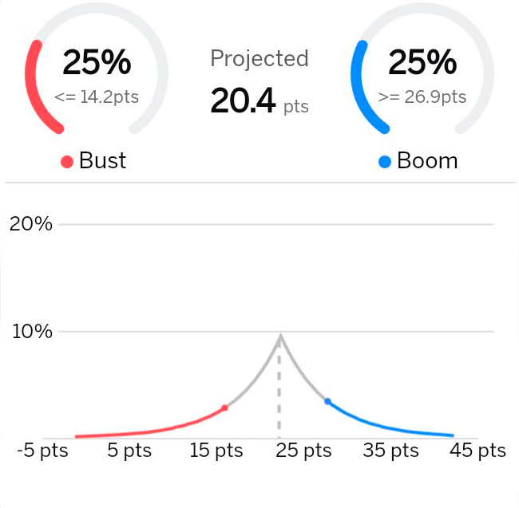

Denver Broncos
position K
team xmk
status healthy
pos rank
5
avg points
22.2
season stats
proj
wk16
269.2
1.7
0.8/0.2
18.7
2022 game Log
player insight with watson

projection overview
compare players

2022 trend
busted
1 of 15
boomed
4 of 15
avg
22.6 pts
show game by game
share projections
outlook
week 16 protection 18.7 points
Burrow threw four second-half touchdowns in Week
15 and has another tough road affair on the docket
against the Patriots in Week 16. However, with Tyler
Boyd and Tee Higgins healthy, Burrow should have
another big day. He checks in as a QB1 for Saturday.
recent news all news 
sun, dec 25 1:13AM
Burrow was dominant in the first half against the
Pats, and very shaky in the second half in the
Bengals' 22-18 win. He ended up completing 40 of 52
passes for 375 yards and three touchdowns while
throwing two interceptions.
SPIN: All of the Bengals' scoring came in the first
half, when Burrow went 28-of-36 for 284 yards and
all three touchdowns. In the second half he threw a
pick-six and was held under 100 yards, as the Pats'
pass rush intensified and their offense kept the
Bengals off the field. The Bengals need to find out
how long OT La’el Collins (knee) will be out, but
presumably he won't play next week against the Bills.
�